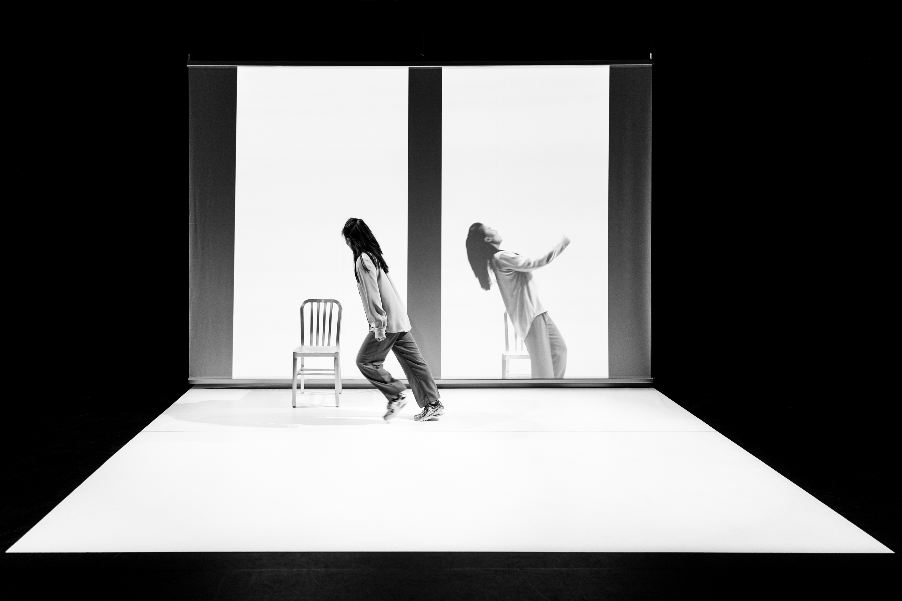

Doppelgänger
Photography by Maria Baranova
Commissions
Media Art Xploration (MAX)
Showcase
Boston Museum of Science, Oct 2022
MAXlive 2021: The Neuroverse | New York Live Arts, Nov 5, 2021
Doppelgänger is a duet manufactured out of time delay. A real-time stream of the performer is algorithmically manipulated as it appears in a life-size projection. The resulting duet vacillates between a simple canon of delayed repetition and the illogical sense that the live feed is responding to the past or perhaps even anticipating the future.
I created this piece as part of Nuum Collective. It is commissioned by "MAXlive 2021: The Neuroverse" and premiered at New York Live Arts on Nov 2021.
Story
A friend once told me
that a true conversation
must by necessity
travel long distances.
This is me, talking to my future. A double, made of echoes and
reverberations.
I relive a life of leaving and returning through conversation with a past self —
Created for Mongolian-born choreographer NiNi Dongnier, Doppelgänger interrogates a
life lived in migration, where migration has become the sine qua non for both
physical and emotional survival.
A life lived in migration is one of parallel lives, immeasurably displaced by the
measurable distance between people and versions of self.
Relationships, places, cultures, social orders and forms of government collapse.
Memories collapse. Time collapses.
And so I converse with past and future selves as if they are old friends existing in
the present.
@MAXlive 2021: The Neuroverse | New York Live Arts

Photography by Maria Baranova
The Technology
A real-time stream of the performer is algorithmically manipulated to create a
time-delay in a life-size projection of the stream. The delay manufactures the
illusion of a duet when in fact it is simply history repeating itself.
The algorithm is at times a fixed delay of time, at times driven by the variability
of the performer’s movements and in the penultimate scene of the piece, recovers
moments from the opening sequences of the performance as the performer moves through
a series of postures that echo what has come before.
The live performer’s movements are tracked using MoveNet, a Tensorflow.js machine
learning model for pose detection and classified with a KNN classifier. A BERT-based
Seq2Seq model is then used to predict the next "phrase" based on the current
movements, and drive the upcoming sequences of the doppelgänger.